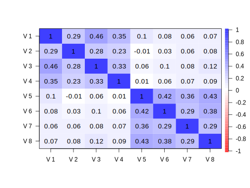

Confirmatory Factor Analysis
This mostly follows Bollen (1989) for maximum likelihood estimation of a confirmatory factor analysis. In the following example we will examine a situation where there are two underlying (correlated) latent variables for 8 observed responses. The code as is will only work with this toy data set. Setup uses the psych and mvtnorm packages, and results are checked against the lavaan package.
Data Setup
library(tidyverse)
library(mvtnorm)
library(psych)
set.seed(123)
# loading matrix
lambda = matrix(
c(1,.5,.3,.6,0,0,0,0,
0,0,0,0,1,.7,.4,.5),
nrow = 2,
byrow = TRUE
)
# correlation of factors
phi = matrix(c(1, .25, .25, 1), nrow = 2, byrow = TRUE)
# factors and some noise
factors = rmvnorm(1000, mean = rep(0, 2), sigma = phi, "chol")
e = rmvnorm(1000, sigma = diag(8))
# observed responses
y = 0 + factors%*%lambda + e
# Examine
#dim(y)
describe(y) vars n mean sd median trimmed mad min max range skew kurtosis se
X1 1 1000 0.05 1.44 0.05 0.05 1.42 -5.13 4.51 9.63 0.00 0.01 0.05
X2 2 1000 0.00 1.08 -0.01 0.00 1.04 -3.34 3.25 6.59 0.00 -0.06 0.03
X3 3 1000 -0.01 1.04 0.00 -0.01 1.01 -4.40 3.56 7.96 -0.07 0.27 0.03
X4 4 1000 0.00 1.14 -0.03 -0.01 1.13 -3.85 3.98 7.83 0.10 0.16 0.04
X5 5 1000 0.04 1.43 0.10 0.05 1.39 -4.43 5.21 9.63 -0.02 0.07 0.05
X6 6 1000 -0.02 1.22 -0.01 -0.02 1.27 -3.35 4.68 8.03 0.04 -0.10 0.04
X7 7 1000 0.02 1.06 0.01 0.01 1.05 -2.94 3.33 6.28 0.11 -0.09 0.03
X8 8 1000 0.00 1.14 -0.01 0.01 1.12 -3.27 3.47 6.73 -0.05 0.07 0.04round(cor(y), 3) [,1] [,2] [,3] [,4] [,5] [,6] [,7] [,8]
[1,] 1.000 0.291 0.233 0.352 0.104 0.078 0.049 0.050
[2,] 0.291 1.000 0.145 0.228 -0.008 0.031 0.054 0.072
[3,] 0.233 0.145 1.000 0.171 0.006 0.066 0.026 0.079
[4,] 0.352 0.228 0.171 1.000 0.014 0.057 0.054 0.079
[5,] 0.104 -0.008 0.006 0.014 1.000 0.417 0.259 0.300
[6,] 0.078 0.031 0.066 0.057 0.417 1.000 0.201 0.273
[7,] 0.049 0.054 0.026 0.054 0.259 0.201 1.000 0.142
[8,] 0.050 0.072 0.079 0.079 0.300 0.273 0.142 1.000#see the factor structure
cor.plot(cor(y))
# example exploratory fa
#fa(y, nfactors=2, rotate="oblimin") Functions
# measurement model, covariance approach
cfa_cov <- function (parms, data) {
# Arguments-
# parms: initial values (named)
# data: raw data
# Extract parameters by name
require(psych) # for tr
l1 = c(1, parms[grep('l1', names(parms))]) # loadings for factor 1
l2 = c(1, parms[grep('l2', names(parms))]) # loadings for factor 2
cov0 = parms[grep('cov', names(parms))] # factor covariance, variances
# Covariance matrix
S = cov(data)*((nrow(data)-1)/nrow(data)) # ML covariance div by N rather than N-1, the multiplier adjusts
# loading estimates
lambda = cbind(
c(l1, rep(0,length(l2))),
c(rep(0,length(l1)), l2)
)
# disturbances
dist_init = parms[grep('dist', names(parms))]
disturbs = diag(dist_init)
# factor correlation
phi_init = matrix(c(cov0[1], cov0[2], cov0[2], cov0[3]), 2, 2) #factor cov/correlation matrix
# other calculations and log likelihood
sigtheta = lambda%*%phi_init%*%t(lambda) + disturbs
# in Bollen p + q (but for the purposes of this just p) = tr(data)
pq = dim(data)[2]
# a reduced version; Bollen 1989 p.107
# ll = -(log(det(sigtheta)) + tr(S%*%solve(sigtheta)) - log(det(S)) - pq)
# should be same as Mplus H0 loglike
ll = ( (-nrow(data)*pq/2) * log(2*pi) ) -
(nrow(data)/2) * ( log(det(sigtheta)) + tr(S%*%solve(sigtheta)) )
ll
}Correlation approach for standardized results. Lines correspond to those in cfa_cov.
cfa_cor <- function (parms, data) {
require(psych)
l1 = parms[grep('l1', names(parms))] # loadings for factor 1
l2 = parms[grep('l2', names(parms))] # loadings for factor 2
cor0 = parms[grep('cor', names(parms))] # factor correlation
S = cor(data)
lambda = cbind(
c(l1, rep(0,length(l2))),
c(rep(0,length(l1)), l2)
)
dist_init = parms[grep('dist', names(parms))]
disturbs = diag(dist_init)
phi_init = matrix(c(1, cor0, cor0, 1), ncol=2)
sigtheta = lambda%*%phi_init%*%t(lambda) + disturbs
pq = dim(data)[2]
#ll = ( log(det(sigtheta)) + tr(S%*%solve(sigtheta)) - log(det(S)) - pq )
ll = ( (-nrow(data)*pq/2) * log(2*pi) ) -
(nrow(data)/2) * ( log(det(sigtheta)) + tr(S%*%solve(sigtheta)) )
ll
}Estimation
Raw
Set initial values.
par_init_cov = c(rep(1, 6), rep(.05, 8), rep(.5, 3))
names(par_init_cov) = rep(c('l1','l2', 'dist', 'cov'), c(3, 3, 8, 3))Estimate and extract.
result_cov = optim(
par = par_init_cov,
fn = cfa_cov,
data = y,
method = "L-BFGS-B",
lower = 0,
control = list(fnscale = -1)
)
loadings_cov = data.frame(
f1 = c(1, result_cov$par[1:3], rep(0, 4)),
f2 = c(rep(0, 4), 1, result_cov$par[4:6])
)
disturbances_cov = result_cov$par[7:14]Standardized
par_init_cor = c(rep(1, 8), rep(.05, 8), 0) #for cor
names(par_init_cor) = rep(c('l1', 'l2', 'dist', 'cor'), c(4, 4, 8, 1))result_cor = optim(
par = par_init_cor,
fn = cfa_cor,
data = y,
method = "L-BFGS-B",
lower = 0,
upper = 1,
control = list(fnscale = -1)
)
loadings_cor = matrix(
c(result_cor$par[1:4], rep(0, 4), rep(0, 4), result_cor$par[5:8]),
ncol = 2
)
disturbances_cor = result_cor$par[9:16]Comparison
Gather results for summary
results = list(
raw = list(
loadings = round(data.frame(loadings_cov, Variances = disturbances_cov), 3),
cov.fact = round(matrix(c(result_cov$par[c(15, 16, 16, 17)]), ncol =2) , 3)
),
standardized = list(
loadings = round(
data.frame(
loadings_cor,
Variances = disturbances_cor,
Rsq = (1 - disturbances_cor)
), 3),
cor.fact = round(matrix(c(1, result_cor$par[c(17, 17)], 1), ncol = 2), 3)
),
# note inclusion of intercepts for total number of par
fit = data.frame(
ll = result_cov$value,
AIC = -2 * result_cov$value + 2 * (length(par_init_cov) + ncol(y)),
BIC = -2 * result_cov$value + log(nrow(y)) * (length(par_init_cov) + ncol(y))
)
)
results$raw
$raw$loadings
f1 f2 Variances
1 1.000 0.000 1.097
2 0.465 0.000 0.955
3 0.353 0.000 0.951
4 0.588 0.000 0.948
5 0.000 1.000 1.064
6 0.000 0.744 0.942
7 0.000 0.381 0.976
8 0.000 0.507 1.038
$raw$cov.fact
[,1] [,2]
[1,] 0.983 0.170
[2,] 0.170 0.973
$standardized
$standardized$loadings
X1 X2 Variances Rsq
1 0.687 0.000 0.528 0.472
2 0.426 0.000 0.818 0.182
3 0.338 0.000 0.886 0.114
4 0.514 0.000 0.736 0.264
5 0.000 0.691 0.522 0.478
6 0.000 0.603 0.636 0.364
7 0.000 0.356 0.874 0.126
8 0.000 0.441 0.806 0.194
$standardized$cor.fact
[,1] [,2]
[1,] 1.000 0.174
[2,] 0.174 1.000
$fit
ll AIC BIC
1 -12330.93 24711.86 24834.56Confirm with lavaan.
library(lavaan)
y = data.frame(y)
model = ' F1 =~ X1 + X2 + X3 + X4
F2 =~ X5 + X6 + X7 + X8 '
fit = cfa(model, data=y, mimic='Mplus', estimator='ML')
fit.std = cfa(model, data=y, mimic='Mplus', estimator='ML', std.lv=T, std.ov=T) # for standardized
# note that lavaan does not count the intercepts among the free params for AIC/BIC
# by default, but the mimic='Mplus' should have them correspond to optim's results
summary(fit, fit.measures=TRUE, standardized=T) lavaan 0.6-7 ended normally after 30 iterations
Estimator ML
Optimization method NLMINB
Number of free parameters 25
Number of observations 1000
Number of missing patterns 1
Model Test User Model:
Test statistic 25.437
Degrees of freedom 19
P-value (Chi-square) 0.147
Model Test Baseline Model:
Test statistic 746.093
Degrees of freedom 28
P-value 0.000
User Model versus Baseline Model:
Comparative Fit Index (CFI) 0.991
Tucker-Lewis Index (TLI) 0.987
Loglikelihood and Information Criteria:
Loglikelihood user model (H0) -12330.931
Loglikelihood unrestricted model (H1) -12318.212
Akaike (AIC) 24711.862
Bayesian (BIC) 24834.555
Sample-size adjusted Bayesian (BIC) 24755.154
Root Mean Square Error of Approximation:
RMSEA 0.018
90 Percent confidence interval - lower 0.000
90 Percent confidence interval - upper 0.035
P-value RMSEA <= 0.05 1.000
Standardized Root Mean Square Residual:
SRMR 0.019
Parameter Estimates:
Standard errors Standard
Information Observed
Observed information based on Hessian
Latent Variables:
Estimate Std.Err z-value P(>|z|) Std.lv Std.all
F1 =~
X1 1.000 0.991 0.687
X2 0.465 0.058 7.955 0.000 0.461 0.427
X3 0.353 0.050 7.041 0.000 0.350 0.338
X4 0.588 0.070 8.387 0.000 0.583 0.514
F2 =~
X5 1.000 0.986 0.691
X6 0.744 0.074 10.075 0.000 0.734 0.603
X7 0.381 0.047 8.160 0.000 0.376 0.356
X8 0.507 0.055 9.144 0.000 0.500 0.441
Covariances:
Estimate Std.Err z-value P(>|z|) Std.lv Std.all
F1 ~~
F2 0.170 0.050 3.367 0.001 0.174 0.174
Intercepts:
Estimate Std.Err z-value P(>|z|) Std.lv Std.all
.X1 0.054 0.046 1.173 0.241 0.054 0.037
.X2 -0.004 0.034 -0.104 0.917 -0.004 -0.003
.X3 -0.012 0.033 -0.372 0.710 -0.012 -0.012
.X4 0.004 0.036 0.113 0.910 0.004 0.004
.X5 0.044 0.045 0.964 0.335 0.044 0.031
.X6 -0.019 0.038 -0.504 0.614 -0.019 -0.016
.X7 0.019 0.033 0.555 0.579 0.019 0.018
.X8 0.002 0.036 0.042 0.967 0.002 0.001
F1 0.000 0.000 0.000
F2 0.000 0.000 0.000
Variances:
Estimate Std.Err z-value P(>|z|) Std.lv Std.all
.X1 1.097 0.120 9.119 0.000 1.097 0.527
.X2 0.955 0.051 18.876 0.000 0.955 0.818
.X3 0.951 0.046 20.471 0.000 0.951 0.886
.X4 0.948 0.058 16.263 0.000 0.948 0.736
.X5 1.064 0.102 10.404 0.000 1.064 0.522
.X6 0.942 0.066 14.236 0.000 0.942 0.636
.X7 0.976 0.047 20.607 0.000 0.976 0.874
.X8 1.038 0.054 19.281 0.000 1.038 0.806
F1 0.983 0.135 7.264 0.000 1.000 1.000
F2 0.973 0.119 8.156 0.000 1.000 1.000Mplus
If you have access to Mplus you can use Mplus Automation to prepare the data. The following code is in Mplus syntax and will produce the above model.
library(MplusAutomation)
prepareMplusData(data.frame(y), "factsim.dat")MODEL:
F1 BY X1-X4;
F2 BY X5-X8;
results:
STDYX;Source
Original code available at https://github.com/m-clark/Miscellaneous-R-Code/blob/master/ModelFitting/cfa.R